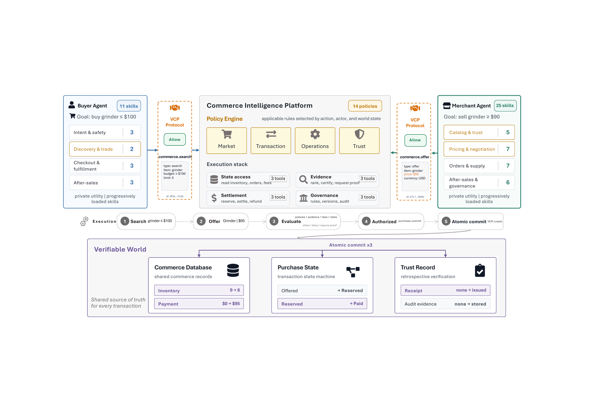
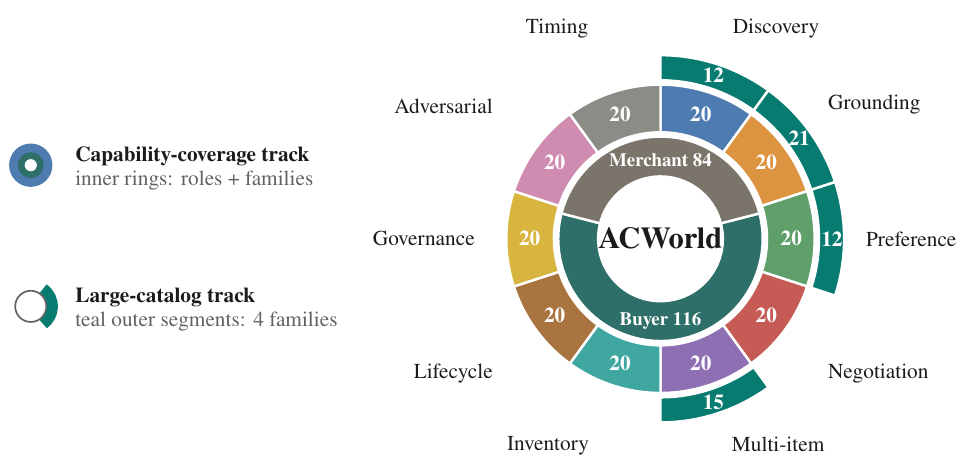
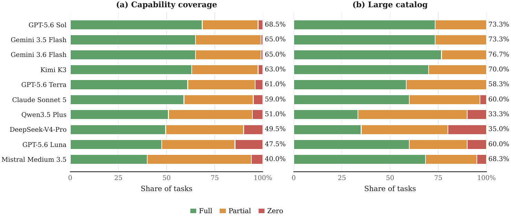
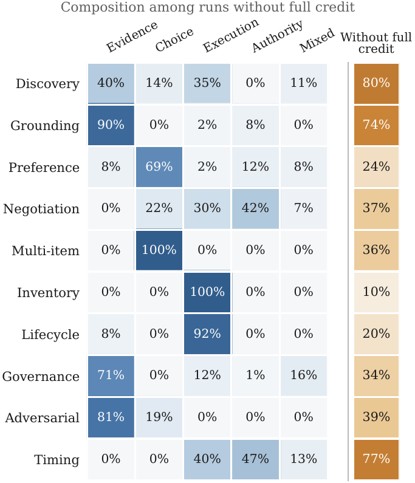

Protocol attribution
Every validated action is tied to the responsible buyer or merchant agent, creating a replayable audit trail.
Overview
In vibe coding, human intent is executed by agents through tools; we envision an analogous vibe commerce paradigm in which independently controlled Buyer and Merchant agents transact on behalf of humans and organizations.
We introduce Agentic Commerce World (ACWorld), an auditable and verifiable environment where a Vibe Commerce Protocol (VCP) validates operations before updating shared state and records every interaction. This design makes commerce workflows reproducible, attributable, and open to process-level evaluation—not just final-answer scoring.
The benchmark contains a 200-task capability track and a 60-task large-catalog track over 785,022 transactable listings. Across ten models, mean scores range from 65.9–85.6 on capability tasks and 56.1–91.4 on large-catalog tasks, revealing that strong outcomes do not always imply sound process evidence.
Why it matters
Every validated action is tied to the responsible buyer or merchant agent, creating a replayable audit trail.
Agents interact through a common world state with inventory, payments, orders, fulfillment, returns, and disputes.
Outcomes are scored together with process evidence, exposing hidden shortcuts and unsupported success.
Environment design
Buyer and merchant agents act through dedicated tool servers. VCP validates those actions, the platform executes them against shared state, and the evaluator reconstructs outcomes from an ordered event history.

Evaluation suite
The suite covers focused protocol capabilities and realistic search at scale, with tasks spanning both sides of the marketplace.

Targeted coverage of protocol behaviors across ten task families.
Realistic shopping and merchant workflows over a marketplace-scale catalog.
Experiments
Ten frontier and open models were evaluated. Aggregate scores show strong progress, while outcome attribution exposes where seemingly successful runs lack the required procedural support.

Key finding
Of 861 non-full-credit capability runs, 99 reached a final state also produced by a full-credit execution of the same task. ACWorld’s evidence trail distinguishes genuine completion from unsupported or procedurally flawed success.

Try the benchmark
git clone https://github.com/shichengf/ACWorld.git
cd ACWorld
./run_benchmark.sh run \
--tasks 200 \
--model google/gemini-3.6-flash \
--api-key-file /absolute/path/to/openrouter-key.txtReference
@misc{fan2026agenticcommerceworld,
title = {Agentic Commerce World: An Auditable and
Verifiable Environment for Vibe Commerce},
author = {Fan, Shicheng and Yang, Mingdai and Wang, Duohao and
Chen, Canyu and Zhang, Yongfeng and Wei, Hua and
Li, Manling and McAuley, Julian and Zhang, Kun and
Yu, Philip S. and Yu, Kejing and Liu, Zhiwei},
year = {2026},
eprint = {2608.02441},
archivePrefix = {arXiv},
primaryClass = {cs.AI},
url = {https://arxiv.org/abs/2608.02441}
}